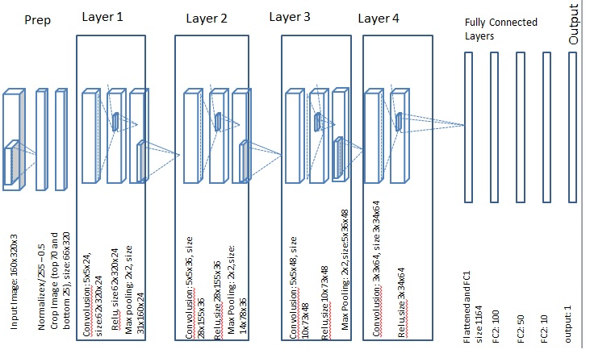
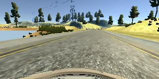
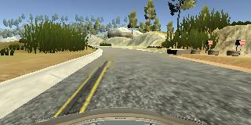

Behavioral Cloning Project
This project includes a simulator to collect driving behavior of a user. Using Karas I built a convolution network that leaned steering angles on a simulation track. The model got trained and validated on images and the angles collected during simulation. The highlights and details of the project are presented in this document.
My project includes the following files:
Using the Udacity provided simulator and my drive.py file, the car can be driven autonomously around the track by executing
sh
python drive.py model.h5
The model.py file contains the code for training and saving the convolution neural network. The file shows the pipeline I used for training and validating the model, and it contains comments to explain how the code works.
My model consists of a - Preprocessing layer where the pixels values on 3 channel are normalized with mean in 0. (line 69) - Preprocessing also crops the top part and bottom part of the input image (line 70) - Convolution layer #1: kernel 5x5 with 24 filters, activation 'relu', followed by max pooling with kernel 2x2. (lines 72-74) - Convolution layer #2:kernel 5x5 with 36 filters, activation 'relu', followed by max pooling with kernel 2x2. (lines 75-77) - Convolution layer #3:kernel 5x5 with 48 filters, activation 'relu', followed by max pooling with kernel 2x2. (lines 78-80) - Convolution layer #3:kernel 3x3 with 64 filters, activation 'relu' (lines 81-82) - dropout 10% (line 83) - Fully connected layer #1 (flatten first) of 1164 nodes, followed by 'relu' activation. (lines 84-87) - Fully connected layer #2 of 100 nodes, followed by 'relu' activation. (lines 88-90) - Fully connected layer #3 of 50 nodes, followed by 'relu' activation. (lines 91-93) - Fully connected layer #4 of 10 nodes, followed by ' relu' activation. (lines 94-96)
The model contains dropout layers in order to reduce overfitting (model.py lines 83).
The model was trained and validated on different sections of data set to ensure that the model was not overfitting (code line 48-52). The model was tested by running it through the simulator and ensuring that the vehicle could stay on the track.
The model used an adam optimizer, so the learning rate was not tuned manually (model.py line 101).
Training data was chosen to keep the vehicle driving on the road. I used a combination of center lane driving, recovering from the left and right sides of the road. I also used flipping images (mirroring) to double the size of the data set.
For details about how I created the training data, see the next section.
The overall strategy for deriving a model architecture was to try something small experiment and see if the car drives on the tracks.
My first step was to use a convolution neural network model similar to the AlexNet. Before I chose the presented model, I tried several models. Reading the discussion on the forum section for the Behavior Cloning thread, I noticed some people suggested simple 2-3 conv layer network following by fully connected layers. I started a simple 3 conv layer network, that did not seem to get me anywhere. I increased a number of layers and made but keept my filter low (under 10 on each layer). After reviewing lectures from udacity, I decided to use a network architecture used by NVidia team for self driving car. That got me futher, now my car was able to drive some distance on the track, but not all the way through. After I increased the kernel size on the first layers to 5x5, I got the desired result.
None of the models (the successful or failed) exhibited over fitting. I never had to deal with growing accuracy on the training set and degrading on the validation..
The biggest "aha" moment was to add the dropout of 10% from the convolutional layers to fully connected. Then the things started to work.
At the end of the process, the vehicle is able to drive autonomously around the track without leaving the road.
The final model architecture (model.py lines 73-98) consisted of a convolution neural network with the layers described in the previous section.
Here is a visualization of the architecture (note: visualizing the architecture is optional according to the project rubric)

To capture good driving behavior, I first recorded two laps on track one using center lane driving. Here is an example image of center lane driving:

I then recorded the vehicle recovering from the left side and right sides of the road back to center so that the vehicle would learn to adjust steering wheel angle to get back to the center of the lane. An example image of the left recover looks like this:

Then I repeated this process on track two in order to get more data points.
To augment the data sat, I also flipped images along vertical center (mirror) and angles thinking that this would double up my data size. In addition to the flipping, I utilized left and right camera image by slightly adjusting angles of the steering wheel for this images (model.py lines 14-32).
After the collection process, I had 5948 number of data points. I then preprocessed this data by normalizing and cropping images as described above.
I finally randomly shuffled the data set and put 20% of the data into a validation set.
I used this training data for training the model. The validation set helped determine if the model was over or under fitting. The ideal number of epochs was 10 as evidenced by declining training error and growing validation set error. I used an adam optimizer so that manually training the learning rate wasn't necessary.